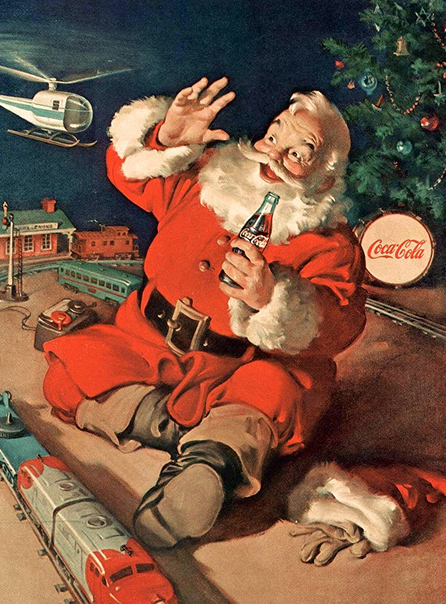

Natale con Coca-Cola
Negli anni successivi la strategia si evolve costantemente: dalla stampa si passa alla televisione, fino alle campagne digitali e ai social media. Nonostante i cambiamenti tecnologici, il brand mantiene una forte coerenza visiva fatta di colori caldi, atmosfere familiari e simboli immediatamente riconoscibili. Le campagne natalizie diventano così un vero appuntamento annuale, atteso dal pubblico come parte delle tradizioni e dei ricordi personali.
Coca-Cola rappresenta uno dei casi più emblematici della storia del marketing, dimostrando come un brand possa non solo inserirsi nella cultura, ma contribuire a plasmarla. L’azienda interpreta il Natale attraverso una narrazione coerente e ripetuta nel tempo, creando un legame emotivo profondo e duraturo con il pubblico. Ancora oggi queste campagne mostrano che il marketing più efficace è quello che diventa tradizione, memoria condivisa e parte integrante della vita delle persone.
